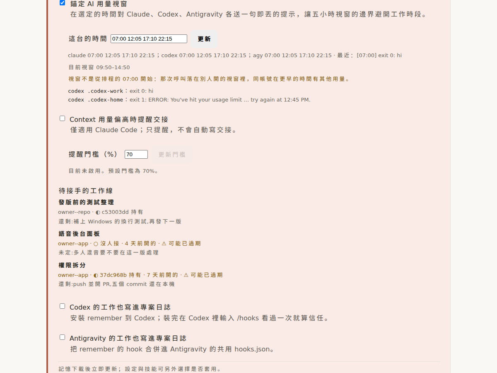

Google Drive
在「我的雲端硬碟」看得到。預設叫 ai-config，也能放進自己的資料夾。
就算稍後搬家或改名，已連線的裝置仍找得到它。
換裝置、換工具，也不用再從頭教一次。
一換環境，就少一條規則、少一個技能，或忘了哪份才是最新的。
每個工作環境都從同一份設定出發。需要時拉回來，改好後再保存。
登入憑證不會放進去；它仍留在原本的裝置上。
規則、技能、共用設定
登入、裝置權限、本機選擇
兩種方式都只保存你的私人設定。
在「我的雲端硬碟」看得到。預設叫 ai-config，也能放進自己的資料夾。
就算稍後搬家或改名，已連線的裝置仍找得到它。
適合本來就有私人儲存庫的人。設定會幫這台接上正確來源。
資料夾已有內容時，不會直接覆蓋。
四個動作，各自只做一件事。
acg pullacg statusacg applyacg push先讓你看。上傳前先顯示這次會保存什麼。
2內容變了就停。確認前若又有更新，會請你重看。
3套用前先備份。發現衝突時，不會假裝一切正常。
你寫的技能可以同步給 Claude Code、Antigravity 與 Codex。
各工具保持原生環境，共用技能隨處保持一致。
你不用記得每個按鈕叫什麼。
「幫我把這台的 AI 設定同步好。」
同步方式、登入與變更都在同一個畫面。
設定時可填資料夾路徑，之後也能查看連結。
預覽沒問題，再按下確認。

設定跟著你走；決定權也一直在你手上。
不會用？直接請 AI：「幫我設定 ai-config。」